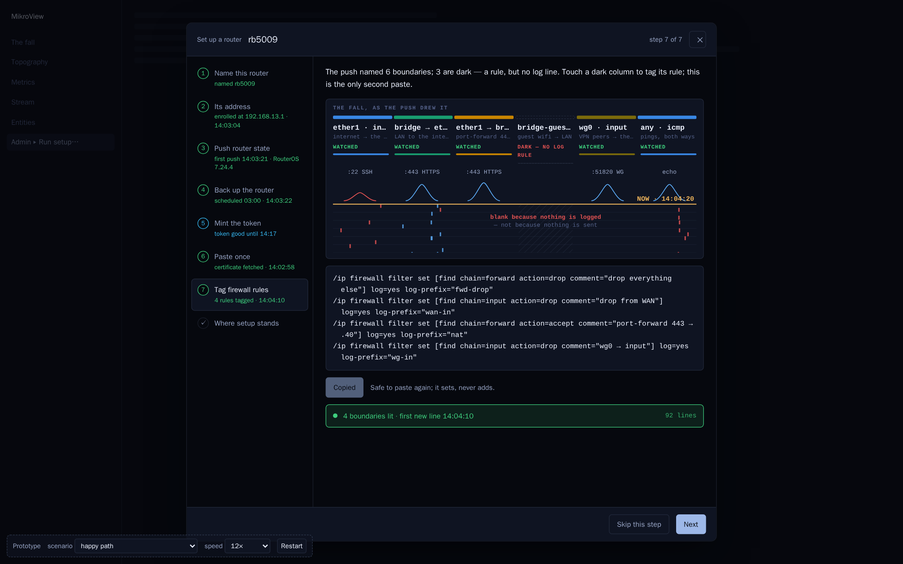
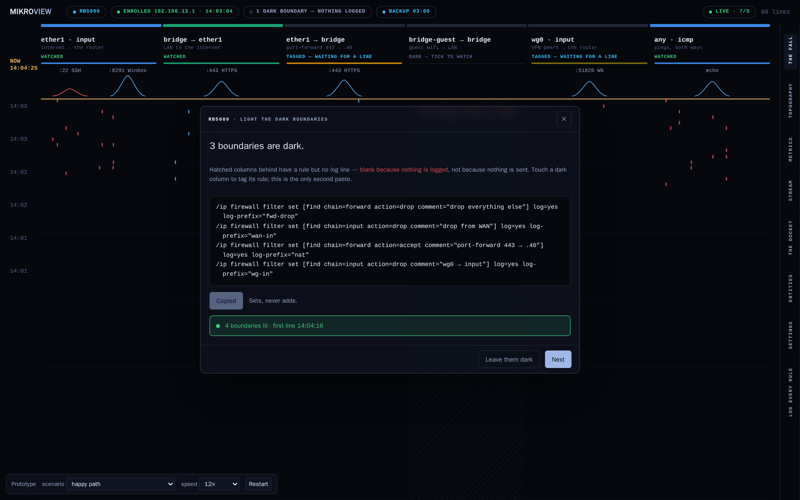

Round 7's kept ledger, refined with the fall's own colour and language; and a full-screen version where setup is the fall coming alive, dark to watched. Answer, Copy, watch. The dashed strip switches scenario and speed.

